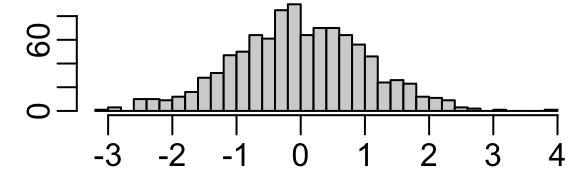
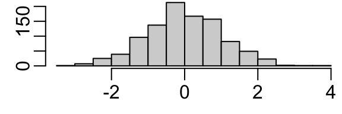
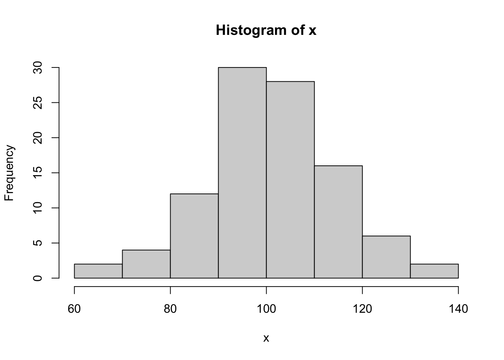
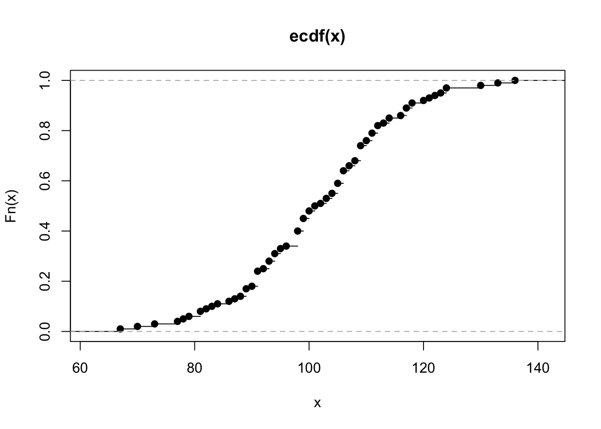
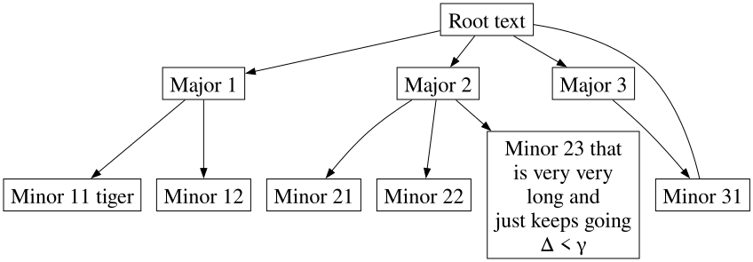
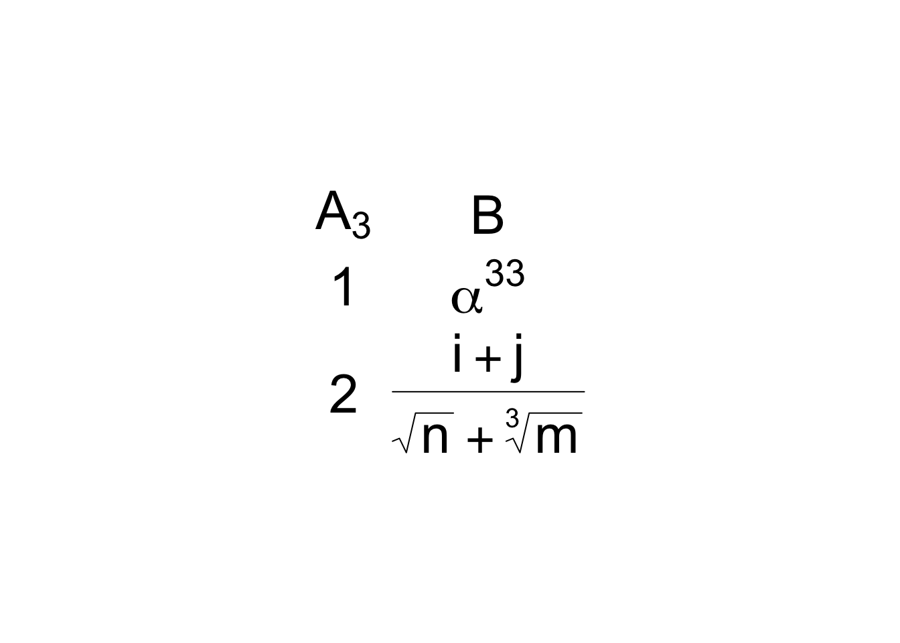
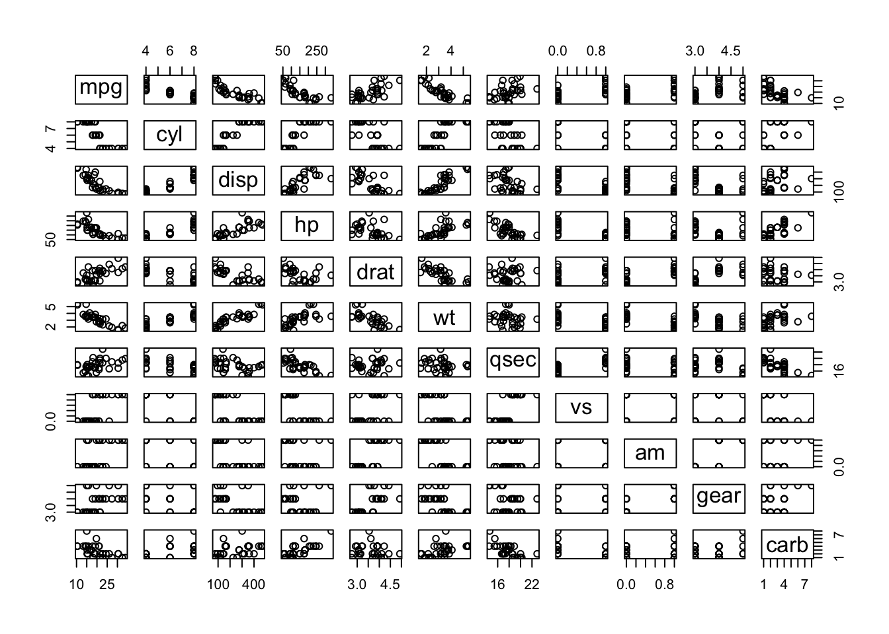

flowchart LR Fig[Figures] --> Lay[Layout<br>Size] Tab[HTML Tables] Place[Placement] --> places[Margin<br>Tabs<br>Expand/Hide<br>Mixing Tables and Graphics] rept[qreport] --> rhf[Report Writing<br>Helper Functions] OF[Overall Format] --> ofs[HTML] OF --> ltx[LaTeX] --> pdf[pdf] OF --> mfd[Multi-Format<br>Reports] MD[Metadata<br>Report<br>Annotations] --> mds[Variable Labels<br>and Units]
4 Report Formatting
A state-of-the-art way to make reproducible reports is to use a statistical computing language such as R and its knitr package in conjunction with either RMarkdown or Quarto, with the latter likely to replace the former. Both of the report-making systems allow one to produce reports in a variety of formats including html, pdf, and Word. Html is recommended because pages can be automatically resized to allow optimum viewing on devices of most sizes, and because html allows for interactive graphics and other interactive components. Pdf is produced by converting RMarkdown or Quarto-produced markdown elements to \(\LaTeX\).
Report formatting is very much enhanced by using variable attributes such as labels and units of measurement that are not considered in base R. Methods for better annotating output using labels and units are given below.
This document can serve as a template for using R with Quarto; one can see the raw script by clicking on Code at the top right of the report. A recommended template for typical statistical reports is here with html and pdf output.
4.1 General Formatting
When one has only one output format target, things are fairly straightforward except some situations where mixed formats are rendered in the same code chunk. Click below for details.
NoteNotes on Printing Mixed Tabular Output in Chunks
With Hmisc package version 4.8 and later and rms package 6.5-0 and later, rendering in html no longer requires results='asis' in chunk headers, and a chunk can mix plain text and html without any problems. The following applies to earlier versions.
To make use of specialized functions that produce html or \(\LaTeX\) markup, one often has to put results='asis' in the code chunk header to keep the system from disturbing the generated html or \(\LaTeX\) markup so that it will be typeset correctly in the final document. This process works smoothly but creates one complication: if you print an object that produces plain text in the same code chunk, the system will try to typeset it in html or \(\LaTeX\). To prevent this from happening you either need to split the chunks into multiple chunks (some with results='asis' and some not) or you need to make it clear that parts of the output are to be typeset verbatim. To do that a simple function pr can sense if results='asis' is in effect for the current chunk. If so, the object is surrounded by the markdown verbatim indicator—three consecutive back ticks. If not the object is left alone. pr is defined in the marksupSpecs$markdown$pr object, so you can bring it to your session by copying into a local function pr as shown below, which has a chunk option results='asis' to show that verbatim output appears anyway. If the argument obj to pr is a data frame or data table, variables will be rounded to the value given in the argument dec (default dec=3) before printing. If you specify inline=x the object x is printed with cat() instead of print(). inline is more for printing character strings.
An example of something that may not render correctly due to results='asis' being in the chunk header (needed for html(...)):
options(prType='html')
f <- ols(y ~ rcs(x1, 5))
f # prints model summary in html format
m <- matrix((1:10)/3, ncol=2)
m
# use pr(obj=m) to fixHere are examples of pr usage.
require(Hmisc)
pr <- markupSpecs$markdown$pr
x <- (1:5)/7
pr('x:', x)
x:
[1] 0.1428571 0.2857143 0.4285714 0.5714286 0.7142857pr(obj=x)[1] 0.1428571 0.2857143 0.4285714 0.5714286 0.7142857pr(inline=paste(round(x,3), collapse=', '))
0.143, 0.286, 0.429, 0.571, 0.714
Instead of working to keep certain outputs verbatim you can use knitr::kable() to convert verbatim output to markdown. Also see the yaml df-print html option, for which you may want to set df-print: kable.
knitr/Quarto will by default print data frames and other simple tables using html. Even though this is seldom needed, you can make knitr use plain text printing by putting this code at the top of the report to redefine the default knitr printing function.
knit_print <- knitr::normal_print4.1.1 Annotating Simple Output
We frequently have a mixture of computations and printing within a single R chunk. But sometimes
Quartosplits up chunk code and output in a hard-to-read way- the object or calculation being printed is not easy to identify when the user has folded the code to make it currently invisible
The Hmisc package prn function will print the name of an object and its contents. Starting with Hmisc version 5.1-3, the printL function can help one create easy-to-read basic output whether the code is folded or not. printL allows you to specify multiple objects with labels to print for them. It also makes it easy to round scalars, vectors, or columns of data frame/tables before printing. Here are some examples.
w <- pi + 1 : 2
printL(w=w)w: 4.14159265358979, 5.14159265358979printL(w, dec=3)4.142, 5.142printL(w=w, 'Some calculation'=exp(1), dec=5)w: 4.14159, 5.14159
Some calculation: 2.71828d <- data.frame(x=pi+1:2, y=3:4, z=.q(a, b))
printL('this is it'=c(pi, pi, 1, 2),
yyy=pi,
d=d,
'Consecutive integers\nup to 10'=1:10,
dec=4)this is it: 3.1416, 3.1416, 1, 2
yyy: 3.1416
d:
x y z
1 4.1416 3 a
2 5.1416 4 b
Consecutive integers
up to 10:
[1] 1 2 3 4 5 6 7 8 9 104.2 Quarto Syntax for Figures
One can specify sizes, layouts, captions, and more using Quarto markup. Captions are ignored unless a figure is given a label. Figure labels must begin with fig-. The figure can be cross-referenced elsewhere in the document using for example See \@fig-scatterplot. Figure will be placed in front of the figure number automatically. Here is example syntax.
This explains how to cross-reference subfigures.
```{r}
#| label: fig-myplot
#| fig-cap: “An example caption (use one long line for caption)”
#| fig-height: 3
#| fig-width: 4
plot(1:7, abs(-3 : 3))
```
#| label: fig-myplot
#| fig-cap: “An example caption (use one long line for caption)”
#| fig-height: 3
#| fig-width: 4
plot(1:7, abs(-3 : 3))
```
If the code produces multiple plots you can combine them into one with a single overall caption and include subcaptions for the individual panels:
```{r}
#| label: fig-myplot
#| fig-cap: “Overall caption …”
#| fig-height: 3
#| fig-width: 4
#| layout-ncol: 2
#| fig-subcap:
#| - “Subcaption for panel (a)”
#| - “Subcaption for panel (b)”
plot(1:7, abs(-3 : 3))
hist(x)
```
#| label: fig-myplot
#| fig-cap: “Overall caption …”
#| fig-height: 3
#| fig-width: 4
#| layout-ncol: 2
#| fig-subcap:
#| - “Subcaption for panel (a)”
#| - “Subcaption for panel (b)”
plot(1:7, abs(-3 : 3))
hist(x)
```
To include an existing image while making use of Quarto for sizing and captioning etc. use this example.
```{r out.width=“600px”}
#| label: fig-mylabel
#| fig-cap: “…”
knitr::include_graphics(‘my.png’)
```
#| label: fig-mylabel
#| fig-cap: “…”
knitr::include_graphics(‘my.png’)
```
If you don’t need to caption or cross-reference the figure use e.g.
Other examples are in the next section.
The qreport package has helper functions for building a table of figures. To use those, put addCap() or addCap(scap="short caption for figure") as the first line of code in the chunk. The full caption is taken as the fig-cap: markup. If you don’t specify scap too addCap the short caption will be taken as the fig-scap: markup, or if that is missing, the full caption. At the end of the report you can print the table of figures using the following syntax (but surround the last line with back ticks).
# Figures
r printCap()
r printCap()
For chunks having #| label: fig- you can automatically have knitr call addCap at the start of a chunk, extracting the needed information, if you run the qreport function hookaddcap() in a chunk before the first chunk that produced a graph. This procedure is used through this book. addCap makes use of fig-scap: for short captions.
4.3 Quarto Built-in Syntax for Enhancing R Output
Helper functions described below allow one to enhance graphical and tabular R output by taking advantage of Quarto formatting features. These functions allow one to produce different formats within one code chunk, e.g., a plot in the margin and a table in a collapsible note appearing after the code chunk. But if you need only one output format within a chunk you can make use of built-in syntax as described here. The yaml-like syntax also allows you to specify heights and widths for figures, plus multi-figure layouts.
Here is some example code with all the markup shown.
```{r}
#| column: margin
#| fig-height: 1
#| fig-width: 3
par(mar=c(2, 2, 0, 0), mgp=c(2, .5, 0))
set.seed(1)
x <- rnorm(1000)
hist(x, nclass=40, main=’’)
x[1:3] # ordinary output stays put
knitr::kable(x[1:3]) # html output put in margin
hist(x, main=’’)
```
#| column: margin
#| fig-height: 1
#| fig-width: 3
par(mar=c(2, 2, 0, 0), mgp=c(2, .5, 0))
set.seed(1)
x <- rnorm(1000)
hist(x, nclass=40, main=’’)
x[1:3] # ordinary output stays put
knitr::kable(x[1:3]) # html output put in margin
hist(x, main=’’)
```
This results follow.
par(mar=c(2, 2, 0, 0), mgp=c(2, .5, 0))
set.seed(1)
x <- rnorm(1000)
hist(x, nclass=40, main='')
x[1:3] # ordinary output stays put[1] -0.6264538 0.1836433 -0.8356286knitr::kable(x[1:3]) # html output put in margin| x |
|---|
| -0.6264538 |
| 0.1836433 |
| -0.8356286 |
hist(x, main='')
Here are a few markups for figure layout inside R chunks.
Wide page (takes over the margins) and put multiple plots in 1 row:
#| column: screen-inset
#| layout-nrow: 1
#| layout-nrow: 1
What I use the most: a wide column that just expands a little into the right margin, especially appropriate when the table of contents is on the right:
#| column: screen-right
When plotting 3 figures put the first 2 in one row and the third in the second row and make it wide.
#| layout: [[1,1], [1]]
Make the top left panel be wider than the top right one.
#| layout: [[70,30], [100]]
Top left and top right panels have equal widths but devote 0.1 of the total width to an empty region between the two top panels.
#| layout: [[45, -10, 45], [100]]
See here for details about figure specifications inside code chunks.
You can put some .aside information to the right of R output.
Tab sets and collapsible text are frequently helpful in report writing. Tricks can be used to flip all tabs with a single button. For example, if a series of analyses were done in parallel using both parametric and nonparametric methods, one can use CSS so that when clicking a Nonparametric tab all the nonparametric analysis results will show throughout the document.
4.4 Quarto Report Writing Helper Functions
Helper functions are defined when you activate the qreport package. You can get help on these functions by the usual way of typing ?functionname at the console. Several of the functions construct Quarto callouts which are fenced-off sections of markup that trigger special formatting, especially when producing html. The special formatting includes collapsible sections and marginal notes. Here is a summary of some of the qreport (plus a few from Hmisc) helper functions. For most of these functions you have to put results='asis' in the chunk header.
| Function | Purpose |
|---|---|
dataChk |
run a series of logical expressions for checking data consistency, put results in separate tabs using maketabs, and optionally create two summary tabs |
dataOverview |
runs a data overview report |
missChk |
creates a series of analyses of the extent and patterns of missing values in a data table or data frame, and puts graphical summaries in tabs |
hookaddcap |
makes knitr automatically extract figure labels, captions, short captions for use in list of figures |
htmlList |
print a named list using the names as headers |
kabl |
front-end to knitr::kable and kables. If you run kabl on more than one object it will automatically call kables. |
makecallout |
generic Quarto callout maker used by makecnote, makecolmarg |
makecnote |
print objects or run code and place output in an initially collapsed callout note |
makecolmarg |
print objects or run code and place output in a marginal note |
maketabs |
print objects or run code placing output in separate tabs |
makemermaid |
makes a mermaid diagram with R variable values included in the diagram |
makegraphviz |
similar to makemermaid but using graphviz |
varType |
classify variables in a data table/frame or a vector as continuous, discrete, or non-numeric non-discrete |
conVars |
use varType to extract list of continuous variables |
disVars |
use varType to extract list of discrete variables |
vClus |
run Hmisc::varclus on a dataset after reducing it |
The input to maketabs, as will be demonstrated later, may be a named list, or more commonly, a series of formulas whose right-hand sides are executed and the result of each formula is placed in a separate tab. The left side of the formula becomes the tab label. For makecolmarg there should be no left side of the formula as marginal notes are not labeled. For the named list option the list names become the tab names. Examples of both approaches appear later in this report. In formulas, a left side label must be enclosed in back ticks and not quotes if it is a multi-word string. A wide argument is used to expand the width of the output outside the usual margins. An initblank argument creates a first tab that is empty. This allows one to show nothing until one of the other tabs is clicked. Alternately you can specify as the first formula ` ` ~ ` `.
The two approaches to using maketabs also apply to makecnote and makecolmarg. Examples of the “print an object and place it inside a callout” are given later in the report for makecnote and makecolmarg. Here is an example of the more general formula method that can render any object, including html widgets as produced by plotly graphics. An interactive plotly graphic appears at the bottom of the plots in the right margin. You can single click on elements in the legend to turn them off and on, and double click within the legend to restore to default values.
require(Hmisc)
require(qreport)
options(plotlyauto=TRUE) # makes Hmisc use plotly's auto size option
# rather than computing height, width
set.seed(1)
x <- round(rnorm(100, 100, 15))
makecolmarg(~ table(x) + raw + hist(x) + plot(ecdf(x)) + histboxp(x=x))x
67 70 73 77 78 79 81 82 83 84 86 87 88 89 90 91 92 93 94 95
1 1 1 1 1 1 2 1 1 1 1 1 1 3 1 6 1 3 3 2
96 98 99 100 101 102 103 104 105 106 107 108 109 110 111 112 113 114 116 117
1 6 5 3 2 1 2 2 4 5 2 2 6 2 3 3 1 2 1 3
118 120 121 122 123 124 130 133 136
2 1 1 1 1 2 1 1 1 

# or try makecnote(`makecnote example` ~ kabl(table(x)) + hist(x) + ...
# Avoid raw by using kabl(table(x)) instead of table(x)Adding + raw to a formula in makecnote, makecolmarg, or maketabs forces printed results to be treated as raw verbatim R output.
makecallout is a general Quarto callout maker that implements different combinations of the following: list or formula, print or run code, defer executing and only produce the code to execute vs. running the code now, and close the callout or leave it open for more calls.
qreport also has helper functions for interactively accessing information to help in report and analysis building:
| Function | Purpose |
|---|---|
htmlView |
view html-converted objects in RStudio View pane |
htmlViewx |
view html-converted objects in external browser |
However the automatic viewing of html objects in the RStudio Viewer will satisfy most needs.
4.5 Multi-Output Format Reports
To allow one report to be used to render multiple output formats, especially html and pdf, it is helpful to be able to sense which output format is currently in play, and to use different functions or options to render output explicitly for the current format. Here is how to create variables that can be referenced simply in code throughout the report, and to invoke the plotly graphics package if output is in html to allow interactivity. A small function ggp is defined so that if you run any ggplot2 output through it, the result will be automatically converted to plotly using the ggplotly function, otherwise it is left at standard static ggplot2 output if html is not the output target.
See this for examples of articles rendered in both html and PDF from the same script.
outfmt <- if(knitr::is_html_output ()) 'html' else 'pdf'
markup <- if(knitr::is_latex_output()) 'latex' else 'html'
ishtml <- outfmt == 'html'
if(ishtml) require(plotly)
ggp <- if(ishtml) ggplotlyr else function(ggobject, ...) ggobject
# See below for more about ggplotlyr (a front end for ggplotly that can
# correct a formatting issue with hover text)Quarto has a excellent facility for conditionally including document sections depending on the currently chosen output format.
NoteSpecial Considerations For \(\LaTeX\)/PDF
The Hmisc, rms, and rmsb packages have a good deal of support for creating \(\LaTeX\) output in addition to html. They require some special \(\LaTeX\) packages to be accessed. In addition, if using any of Quarto’s nice features for making marginal notes, there is another \(\LaTeX\) package to attach. Below you’ll find what needs to be added to the yaml prologue at the top of your script if using Quarto. You have to modify pdf-engine to suit your needs. I use luatex because it handles special unicode characters. In the future (approximately July 2022) a bug in Pandoc will be fixed and you can put links-as-notes: true in the yaml header instead of redefining href and linking in hyperref.
format:
html:
self-contained: true
. . .
pdf:
pdf-engine: lualatex
toc: false
number-sections: true
number-depth: 2
top-level-division: section
reference-location: document
listings: false
header-includes:
\usepackage{marginnote, here, relsize, needspace, setspace, hyperref}
\renewcommand{\href}[2]{#2\footnote{\url{#1}}}The href redefinition above turns URLs into footnotes if running \(\LaTeX\).
There is one output element provided by Quarto that will not render correctly to \(\LaTeX\): a marginal note using the markup .column-margin. To automatically use an alternate in-body format, define a function that can be used for both typesetting formats.
mNote <- if(ishtml) '.column-margin'
else
'.callout-note appearance="minimal"'Then use r mNote enclosed in back ticks in place of the .column-margin callout for generality.
NoteSpecial Considerations For Microsoft Word
Quarto and its workhorse Pandoc now are quite good at creating Word .docx files, even allowing \(\LaTeX\) math expressions to render well and be editable in Word. Missing is the ability to handle marginal notes including .asides.
When collaborating with a Word user by sending her a .docx file whenever a report is updated, it is hard but necessary to discourage her from editing the docx file instead of communicating changes back to you to make in the primary .qmd file. But often the collaborator is using parts of your report to build another Word document. In that case it is important for the collaborator to be able to see what changed since the last report. The minimal-effort way to do this is to save the last version of the .docx file and send both the last and current versions to the collaborator. She can then compare the two versions in Word to see exactly what has changed.
NoteSaving Graphics Images
Even when producing only html, one may wish to save individual graphics for manuscript writing. For non-interactive graphics you can right click on the image and download the .png file. For interactive plots, plotly shows a “take a snapshot” icon when you hover over the image. Clicking this icon will produce a static .png snapshot of the graph. Some graphs are not appropriate for static documents, and the variables created in the code above can be checked so that, for example, an alternative graph can be produced when making a .pdf file. But in other cases one just produces an additional static plot that is not shown in the html report. See the margin note near Figure 15.17 for an example.
NoteUsing
Hmisc Formatting for Variable Labels in Tables
As done with various Hmisc and rms package functions, one can capitalize on Hmisc’s special formatting of variable labels and units when constructing tables in \(\LaTeX\) or html. The basic constructs are shown in the code below.
# Retrieve a set of markup functions depending on typesetting format
# See below for definition of ishtml
specs <- markupSpecs[[if(ishtml) 'html' else 'latex']]
# Hmisc markupSpecs functions create plain text, html, latex,
# markdown, or plotmath code
varlabel <- specs$varlabel # retrieve an individual function
# Format text describing variable named x
# hfill=TRUE typesets units to be right-justified in label
# Use the following character string as a row label
# Default specifies the string to use if there is no label
# (usually taken as the variable name)
varlabel(label(x, default='x'), units(x), hfill=TRUE)For plotting and sometimes for html, the Hmisc hlab function is used. It makes label and units lookups easy. For plain text formatting of labels/units, the Hmisc vlab function is easy to use.
4.6 HTML Tables
Nicely formatted tables can be created in multiple ways:
- using customized code that directly writes html markup
- using customized code that directly writes \(\LaTeX\) markup
- using customized code that writes markdown markup (e.g., “pipe” tables)
- hand coding markdown (usually pipe tables)
The latter two provide less flexibility but have the advantage of being automatically converted to html or \(\LaTeX\) depending on your destination format.
Here is an example of a hand coded markdown pipe table. Note (1) the second line of the markup indicates that the first column is to be left-justified and the second column right-justified, and (2) you can include computed values from R expressions. On the caption line we specify that the first column occupies 2/3 of the width. We could have specified tbl-colwidths="[67,33]" to get the same result.
| This Column | That Column |
|:—–|—–:|
| cat | dog |
| `r pi` | `r 2+3` |
: Table caption {tbl-colwidths=“[2,1]”}
|:—–|—–:|
| cat | dog |
| `r pi` | `r 2+3` |
: Table caption {tbl-colwidths=“[2,1]”}
The result is
| This Column | That Column |
|---|---|
| cat | dog |
| 3.1415927 | 5 |
There is an automatic feature of html that makes it especially attractive as a destination format: If a cell contains a long string of characters, those strings will be line-wrapped appropriately, with the line length depending on the width of the display device.
The knitr package kable function provides an easy way to produce html tables from data tables/frames and matrices, and knitr::kables allows one to put several tables together. The qreport package kabl function combines the features of kable and kables. The kableExtra package allows you to greatly extend what kable can do.
There are many R packages and functions for making advanced html tables. See for example the Table 1 tab in Chapter 9. This table was produced by the Hmisc package summaryM function, which used the htmlTable function in the htmlTable package. Other packages to consider are gt (see Section 4.10) and its uncredited predecessor tangram, and packages discussed here.
Quarto is capable of converting many raw html tables to markdown automatically, and it also allows you to embed markdown syntax in html tables; see here.
The central guide for basic table making in Quarto is here.
Beginning with version 1.5 of the R quarto package (not used in R Workflow), new functions support inclusion of markdown, including math, in most user-generated html markup. Details may be found here.
As of 2025-09-04 Mac binaries for
quarto 1.5 are not available on CRAN and a development version must be installed from github.4.6.1 gt Package
The gt package is to tables as ggplot2 is to graphs. gt provides a wide variety of formatting opportunities allowing one to flexibly create fairly complex tables that can contain interactive elements. Like ggplot2, table elements (column headings, rows, columns, or row-column combinations) are specified by adding layers to an accumulating gt object using a pipe operator (“pass along to”) such as |>. Unlike ggplot2, gt can translate markdown elements to html on-the-fly. This allows you to do things like including bullet lists and small tables inside gt table cells.
See for example the
Categorical tab in Section 2.9 for an example where small markdown tables appear inside a larger gt table.Here is an example that includes many of the gt features that are commonly needed. See Section 4.10 for how to put graphics in gt table cells, and see Section 11.3 for another gt example.
require(gt)
# Define a data frame that forms the table rows and columns
set.seed(1)
d <- data.frame(
Item = c(runif(3), NA),
chi = rchisq(4, 3),
'$$X_2$$' = rnorm(4),
Markdown = c('* part 1\n* part 2\n* part 3', '', '', '**xxx**'),
Y = c('$$\\alpha_{3}^{4}$$', rep('', 3)),
check.names = FALSE) # allows illegal R column names
gt(d) |>
tab_header(title=md('**Main Title $\\beta_3$ Using `gt`**'),
subtitle='Some Subtitle') |>
tab_options(table.width=pct(65)) |>
tab_spanner('Numeric Variables', columns=1:3) |>
tab_spanner('Non-Numeric Variables',
columns=c(Markdown, Y)) |>
tab_row_group(md('**After** Intervention'), rows=3:4) |>
tab_row_group('Before Intervention', rows=1:2) |>
tab_options(row_group.font.weight='bold',
row_group.background.color='lightgray')|>
sub_missing(missing_text='') |>
fmt_number(columns=c(Item, '$$X_2$$'), decimals=2) |>
cols_label(Y ~ html('Velocity<br>of Thing'),
chi ~ md('$$\\chi^2_{3}$$')) |>
cols_width(Markdown ~ px(160)) |>
cols_align(align='center', columns=Y) |>
fmt_markdown(columns=Markdown, rows=1) |>
tab_style(style=cell_text(size='small'),
locations=cells_body(columns=Markdown)) |>
tab_style(style=cell_text(color='blue', align='right'),
locations=cells_column_labels(columns='$$X_2$$')) |>
tab_source_note(md('_Note_: There is a bug in `tab_row_group` in `gt` version 0.9.0 causing the row group labels to appear in the reverse order in which they were named. This is why the `tab_row_group` were reversed in the code. The problem is reported [here](https://github.com/rstudio/gt/issues/717).')) |>
tab_footnote(md('Carefully calculated based on _bad_ assumptions'),
locations=cells_body(columns=Item,
rows=Item==min(Item, na.rm=TRUE)))- 1
-
md()allows you to specifymarkdownsyntax - 2
- Make the table have 65% of the report body width
- 3
-
Instead of printing
NAfor missing values ofItem, print blank - 4
- Two digits to the right of the decimal point for two columns
- 5
-
Rename the
Ycolumn and stack two lines for the label, marking this as html; renamechiusingmarkdownmath notation - 6
-
Make the
Markdowncolumn 160 pixels wide - 7
-
Transform
markdowntext in column namedMarkdown(quotes not needed ingt) but only for the first row. The fourth row rendered**literally instead of using bold face. - 8
-
Make column
Markdownhave a small font - 9
- Make the X_2 column label be blue and right-aligned. Right alignment did not work for math mode.
- 10
-
Footnote automatically placed on the row where
Itemhas its lowest value
Main Title \(\beta_3\) Using gt |
||||
| Some Subtitle | ||||
Numeric Variables
|
Non-Numeric Variables
|
|||
|---|---|---|---|---|
| Item | \[\chi^2_{3}\] | $$X_2$$ | Markdown | Velocity of Thing |
| Before Intervention | ||||
| 1 0.27 | 5.543782 | 0.74 | part 1part 2part 3
|
$$\alpha_{3}^{4}$$ |
| 0.37 | 5.354397 | 0.58 | ||
| After Intervention | ||||
| 0.57 | 2.915247 | −0.31 | ||
| 5.053191 | 1.51 | **xxx** | ||
| 1 Carefully calculated based on bad assumptions | ||||
Note: There is a bug in tab_row_group in gt version 0.9.0 causing the row group labels to appear in the reverse order in which they were named. This is why the tab_row_group were reversed in the code. The problem is reported here. |
||||
To remove certain table elements use these examples.
gt(d) |> tab_options(column_labels.hidden=TRUE) |>
tab_options(table_body.hlines.width=0, table.border.top.width=0)|>
cols_hide(columns=c(X1,X2))
# or
g <- ...
g |> cols_hide(columns=Pvalue)- 1
- remove column headings
- 2
- remove top line
- 3
-
remove columns named
X1andX2 - 4
-
some operation that creates a
gtobject, e.g.,print(describe(mydata, 'continuous')) - 5
- remove a column and finally render the table
4.7 CSS
When producing reports in html, you can create custom html styles that quarto will use. These styles are defined using HTML5’s CSS (cascading style sheets). An example .css file is at hbiostat.org/rflow/h.css, and your report may gain access to such a .css file by including a line like css: h.css in the top-level quarto yaml header under the html: section.
Two of the styles defined by defined by h.css are smaller and smaller2. smaller will shrink the font size of a block of text (even one containing code and R output, but it does not apply to tables) to 80% of its original size. smaller2 will make it 64% of the original size. To invoke these styles we use quarto “divs” as follows:
::: {.smaller2}
This is text that will appear smaller ...
:::Here is an example using smaller2.
This is text that will appear smaller. More of the same. More of the same. More of the same. More of the same. More of the same. More of the same. More of the same. More of the same. More of the same. More of the same. More of the same. More of the same. More of the same.
| X | Y |
|---|---|
| 2.3 | 4.5 |
| 2.2 | 3.3 |
x <- pi
x[1] 3.141593Another style in h.css is quoteit which is useful for including quotations. The text is italicized, dark blue, 80% of regular size, and has 10% left and right margins. Here is an example.
::: {.quoteit}
Some eloquent quote appears here. The author of the quote is assumed to know what they are talking about, and seem to be able to express themselves.
:::Some eloquent quote appears here. The author of the quote is assumed to know what they are talking about, and seem to be able to express themselves.
As discussed here you can use Quarto's markdown syntax to style text with CSS, e.g., the color is [red]{style="color: red;"}. This can be handy when you change a report and you want someone else to see what’s changed. Suppose that changed text is to appear in blue. Define a “mark changed text” character variable Ch as follows.
Unfortunately, these HTML colors will not render in Word.
Ch <- '{style="color:blue;"}'Then you can type “[This text]`r Ch` has changed” to render the following: This text has changed. You can also define a helper function to be generic if you want to use more than one color:
# substitute keeps you from having to quote a word
col <- function(co) {
co <- as.character(substitute(co))
paste0('{style="color:', co, ';"}')
}Try it: [This]`r col(red)` is red and [This other thing]`r col(blue)` is blue.
which renders:
This is red and this other thing is blue if rendering to HTML.
4.8 Advanced Tables That Render to Both HTML and Word
Although there are many advanced table making tools in R for producing HTML, most of these will not properly render to Word much of the time. Functions that directly write HTML markup such as those in the Hmisc and htmlTable packages produce HTML that Quarto and pandoc know how to faithfully render to Word. An example multi-format output script is here, with HTML output and .docx output.
4.9 Diagrams
Quarto builds in two diagramming languages: mermaid and graphviz. Section 8.1 has detailed examples using mermaid, which uses a simpler format than graphviz. One nice feature of mermaid is its allowance for math expressions as of Quarto 1.6.12 as shown below. Note that \(\LaTeX\) equations are surrounded by $$ and double quotes.
flowchart LR
A["$$\alpha_{3} + \beta\times X$$"] --> B(Round edge)
B --> C{Decision}
C --> D[Result one]
C --> E[Result two]
But mermaid tends to be quite fragile, and chart rendering gets distorted when the underlying mermaid code is updated. graphviz is recommended. graphviz allows for more complex diagrams exemplified here and also provides more control. graphviz nodes can include HTML tables, and you can even have arrows drawn between table cells or between a table cells and other non-table nodes. Here is an example, taken from this excellent post. Connections between diagram elements are made possible by assigning port identifiers to elements.
The chunk header refers to
dot which is a primary module of graphviz, for directed graphs.digraph {
graph [pad="0.5", nodesep="0.5", ranksep="2"]
// splines=ortho for square connections
node [shape=plain]
rankdir=LR;
Foo [label=<
<table border="0" cellborder="0" cellspacing="0">
<tr><td><b><i>InputFoo</i></b></td><td><font color="blue">two</font> </td> </tr><HR/>
<tr> <td port="1">one</td><td> two </td></tr>
<tr> <td port="2">two</td><td> two </td></tr>
<tr> <td port="3">three</td><td> two </td></tr>
<tr> <td port="4">four</td><td> two </td></tr>
<tr> <td port="5">five</td><td port="a"> two </td></tr>
<tr> <td port="6">six</td><td port="b"> two </td></tr>
</table>>];
Bar [label=<This and that<br/><font face="courier" color="darkblue">and that and <b>that</b></font>>];
Foo:3:w -> Foo:2:w;
// node name:port:direction (n,ne,e,se,s,sw,w,nw,c,_)
// c=center within node, _=use appropriate node side
// See graphviz.org/docs/attr-types/portPos
Foo:3:w -> Foo:6:w;
Foo:6:w -> Foo:1:w;
Foo:1:w -> Foo:a:e;
Foo:b:e -> Bar;
}
```The qreport makegraphviz function allows variable insertions into graphviz diagrams, and if a variable to be inserted is a data frame it will be converted to a simple HTML table that graphviz can handle. Here is an example. {u} is the syntax for inserting the value of variable u.
x <- data.frame(x1=round(runif(3), 3), x2=.q(a,b,c))
pr(obj=x) x1 x2
1 0.258 a
2 0.729 b
3 0.453 cz <- 'digraph {node [shape=plain];
Foo [shape=oval label=<Information about <font color="blue">{{g}}</font>>];
Bar [label=<{{u}}>]; // add shape=box to box the table
Foo -> Bar}'
makegraphviz(z, g='states', u=x, file='gvtest.dot')The diagram is then rendered with a dot chunk containing a special file: gvtest.dot markup.
See Section 8.1 for a more advanced graphviz example that is along these lines. See this for some excellent graphviz flowchart examples.
In qreport version 1.0-2 there is a new function makegvflow that creates graphviz markup for flowcharts from plain text. Indentation that is a multiple of 2 spaces indicates whether a node is a major, minor, or tiny node. For example a line indented 4 spaces after a line that is indented 2 spaces becomes a minor node that is directed from the preceeding major node. makegvflow does automatic word-wrapping to keep text boxes from getting too wide, and translates simple \(\LaTeX\) math markup to simple HTML markup. Variable insertions using double braces are also supported.
If a line begins with “+” as its first non-blank character, that line is appended to the previous regular line but with a double line break. The following example shows most of makegvflow’s features.
x <- '
Root text
Major 1
Minor 11 {{jj}}
Minor 12
Major 2
Minor 21
Minor 22
Minor 23 that is very very long and just keeps going
tiny 231 and $\\alpha + \\sum_{i=1}^{n}X_{i}$
tiny 232
+ a second line for tiny 232 that is pretty long
+ a third line for tiny 232
Major 3
Minor 31
tiny 311'
# First, just print the constructed graphviz code
makegvflow(x, jj='tiger', onlyprint=TRUE)digraph {
rankdir =TD;
node [style=filled, shape=box, fontname="Times-Roman", fontsize=18, fontcolor=blue, fillcolor=azure, penwidth=0.1];
edge [color=blue3, arrowsize=0.7];
R[label=<Root text>]
n1[label=<Major 1>]
n11[label=<Minor 11 {{jj}}>]
n12[label=<Minor 12>]
n2[label=<Major 2>]
n21[label=<Minor 21>]
n22[label=<Minor 22>]
n23[label=<Minor 23 that is very very<br></br>long and just keeps going>]
n231[label=<tiny 231 and $\alpha +<br></br>\sum_{i=1}^{n}X_{i}$>]
n232[label=<tiny 232<br></br><br></br>a second line for<br></br>tiny 232 that is pretty<br></br>long<br></br><br></br>a third line for tiny<br></br>232>]
n3[label=<Major 3>]
n31[label=<Minor 31>]
n311[label=<tiny 311>]
R -> {n1, n2, n3}
n1 -> {n11, n12}
n2 -> {n21, n22, n23}
n23 -> {n231, n232}
n3 -> {n31}
n31 -> {n311}
}# Now write it to the indicated file for inclusion in the next code chunk
makegvflow(x, extracon='n12 -> n21', jj='tiger', direction='LR',
file='gvflow.dot')If not needing to use \(\LaTeX\) math notation, the makedot function in qreport version 1.1-0 is useful for making flow diagrams with control of node connections, word wrapping of long strings, and variable insertions. Lines with node names following by a colon with no spaces define node text. Lines not starting with this pattern define node connections and are placed verbatim in the output. Here is an example. \\n in label text is replaced with ordinary \n line breaks, and lines containing \\n do not have ordinary word wrapping done.
x <- '
R:Root text
N1:Major 1
N11:Minor 11 {{jj}}
N12:Minor 12
N2:Major 2
N21:Minor 21
N22:Minor 22
N23:Minor 23 that\\nis very very\\nlong and\\njust keeps going\\nΔ < γ
N3:Major 3
N31:Minor 31
R -> {N1, N2, N3}
N1 -> {N11, N12}
N2 -> {N21, N22, N23}
N3 -> N31
N31 -> R [arrowhead=none, arrowtail=none]'
makedot(x, jj='tiger', onlyprint=TRUE)digraph {rankdir =TD;
node [shape=box, fontsize=24];
R[label="Root text"]
N1[label="Major 1"]
N11[label="Minor 11 {{jj}}"]
N12[label="Minor 12"]
N2[label="Major 2"]
N21[label="Minor 21"]
N22[label="Minor 22"]
N23[label="Minor 23 that
is very very
long and
just keeps going
Δ < γ"]
N3[label="Major 3"]
N31[label="Minor 31"]
R -> {N1, N2, N3}
N1 -> {N11, N12}
N2 -> {N21, N22, N23}
N3 -> N31
N31 -> R [arrowhead=none, arrowtail=none]
}makedot(x, jj='tiger', file='makedot.dot')The last diagram was rendered with
```{dot}
//| file: makedot.dot
```which renders fine, but if you want to put the diagram in a numbered figure environment with a caption you need to use another approach. First convert the diagram to an actual graphics format that Quarto understands: svg. Assuming the user has installed the graphviz app externally the conversion is simple.
system("dot -Tsvg makedot.dot -o makedot.svg")Then render as a true figure using the following.
```{r echo=FALSE}
#| label: fig-rformat-makedot
#| fig-cap: Example graphviz chart as a true figure
knitr::include_graphics("makedot.svg")
```
NoteOther Approaches for Adding Captions to Generated
graphviz charts
The following work but may not treat the figure as a true Quarto figure, so may not include it in a table of figures.
{#fig-rformat-makedot2}
or
::: {.figure #fig-rformat-makedot3}
```{dot}
//| file: makedot.dot
```
Example graphviz chart with a caption
:::
Note
Mermaid Tricks
- Mindmaps
- Using Font Awesome
- Theming including specification of a diagram’s color scheme, but see this
- Theming with Quarto
Using Tooltips
Note: As of 2022-12-11 Quarto has withdrawn support for tooltips. I hope that is added back someday.
As exemplified in Chapter 8, Mermaid provides an easy way to make many types of diagrams. Diagrams are more valuable when they are dynamic. Mermaid provides an easy way to include pop-up tooltips in diagram nodes, to provide deeper information about the node. When the tooltips contain tables whose columns need to line up, you need to put the following in your document so that tooltips will used a fixed-width font and preserve white space. The best way to include this is to put it in a .css file that is reference in the report’s yaml, or to surround the four lines with <style> … </style>.
mermaidTooltip {
font-family: courier;
white-space: pre;
}
font-family: courier;
white-space: pre;
}
Quarto has excellent support for Graphviz charts, facilitated by the qreport package makegraphviz function to help insert variables and data tables inside diagrams. The Graphviz approach also allows fine control of fonts and colors. It is best to spend a little more time learning the Graphviz dot language with Quarto, with and without using makegraphviz.
4.10 Mixing Graphics and Tables
You may need to compose a matrix of outputs where some elements are graphical and some are tabular. R and Quarto provide a variety of methods for accomplishing this, summarized below, with links.
- Base graphics: produce one large image using functions such as
lines,points,text; simple to understand but takes a good deal of composition work to compute \(x,y\) coordinates for placing text and for keeping the correct column justifications flextablepatchwork+gridExtra: tables are converted to graphics then layed out using elegantpatchworksyntax as exemplified hereggtextkableExtragtpossibly withgtExtrasorsparklinegt nanoplots, a new way to include tiny graphics ingttable cells- Native
Quarto+gridExtra - Native
Quartotable with some cells created by converting graphics output to svg (scalable vector graphic using thesvglitepackage) and marked as html
The last two options are appealing because of their minimal dependencies. Here is an example using the next-to-last option based on the layout syntax described in Section 4.3. The page is divided into two rows, with a graph and a table appearing left to right in the first row, and a large graph taking up the whole second row. Between the two elements in the first row, 10% of the width is left blank to separate the two. The gridExtra package is used to convert a table to a plot, and math notation using R plotmath is included.
plot(cars)
grid::grid.newpage()
# parse=TRUE: make grid.table respect plotmath notation
# also increase font size for the table
tt <- gridExtra::ttheme_minimal(parse=TRUE, base_size=30)
d <- cbind('A[3]'=1:2, B=c('alpha^33', 'frac(i+j,sqrt(n) + sqrt(m, 3))'))
gridExtra::grid.table(d, theme=tt)
plot(mtcars)


See this tutorial for ways to format specific rows/columns in a grid table.
Now consider the last option. Instead of converting table elements to graphics we convert graphics elements to html by rendering them to svg text using the svglite package and marking the text as html with htmltools::HTML. Here is a function that makes this easy to do. The expr argument is any R expression that produces a graph. It must be enclosed in braces if the expression has more than one command. Arguments ps, cex.lab, cex.axis, ... are ignored when using ggplot2.
msvg <- function(expr, w=5, h=4, ps=10, cex.lab=.9, cex.axis=0.6,
bg='transparent', ...) {
f <- tempfile(fileext='.svg')
on.exit(unlink(f))
svglite::svglite(f, width=w, height=h, pointsize=ps, bg=bg)
qreport::spar(cex.lab=cex.lab, cex.axis=cex.axis, ...)
.x. <- expr
if(inherits(.x., 'ggplot')) print(.x.)
dev.off()
htmltools::HTML(readLines(f))
}In the following example the width of column 1 was specified to be twice the width of column 2, and column 2 is right-justified. An R base graphic is placed in row 1 column 1, and a ggplot2 graphic in row 2 column 2. Column 2 is centered.
`r p1 <- msvg(plot(rnorm(20), ylab=’’), w=4, h=2)`
`r p2 <- msvg(ggplot(mapping=aes(x=1:10, y=rnorm(10))) + geom_point(), w=2.5, h=1.4)`
| A | B |
|:—|:—:|
| `r p1` | Row 1 column 2 |
|
: Example table with svg graphics {tbl-colwidths=“[2,1]”}
`r p2 <- msvg(ggplot(mapping=aes(x=1:10, y=rnorm(10))) + geom_point(), w=2.5, h=1.4)`
| A | B |
|:—|:—:|
| `r p1` | Row 1 column 2 |
|
$\alpha_{3}^{47}$ | `r p2` |: Example table with svg graphics {tbl-colwidths=“[2,1]”}
| A | B |
|---|---|
| Row 1 column 2 | |
| \(\alpha_{3}^{47}\) |
The svg graphics, being scalable, will have full resolution for any level of magnification of the table.
kableExtra and other packages such as gt,flextable, and htmlTable can provide table enhancements. kableExtra would not preserve html for the graphics cell. Here is an example using gt. In this gt approach a data frame is constructed with placeholders for graphics, with the placeholder value being the name of the svg graphics object. Then specific rows and columns are replaced with svg graphics character strings.
See this for
gt examples where the same graphics form is used for all the rows for a column.require(gt)
# Must use double $ for LaTeX math inside gt tables
d <- data.frame(A=c('p1', '$$\\alpha_{3}^{47}$$'),
B=c('Row 1 column 2', 'p2' ) )
# Define a function that will retrieve the correct graph
s <- function(x) c(p1 = p1, p2 = p2)[x]
gt(d) |> tab_header(title='Main Title', subtitle='Some Subtitle') |>
tab_options(column_labels.hidden=TRUE) |>
tab_options(table_body.hlines.width=0, table.border.top.width=0) |>
cols_width(A ~ pct(67), B ~ pct(33)) |>
cols_align(align='left', columns=A) |>
cols_align(align='center', columns=B) |>
text_transform(locations=cells_body(rows=1, columns=A), fn=s) |>
text_transform(locations=cells_body(rows=2, columns=B), fn=s)| Main Title | |
| Some Subtitle | |
| Row 1 column 2 | |
| $$\alpha_{3}^{47}$$ | |
gt has a special function for putting a ggplot in a table cell. Let’s try it. Let’s also replace the first graph with a spike histogram for a normal distribution sample using Hmisc function pngNeedle which produces a png file. Use the gt local_image file to include it.
But note that
ggplot_image produces a png file that is not scalable.g <- ggplot(mapping=aes(x=1:10, y=rnorm(10))) + geom_point()
set.seed(1)
x <- rnorm(10000)
sp <- spikecomp(x, method='grid', normalize=FALSE)
spikehist <- pngNeedle(sp$y / max(sp$y), h=14, w=3, lwd=2)
gt(d) |> text_transform(locations=cells_body(rows=1, columns=A),
fn=function(x) local_image(spikehist, height=14)) |>
text_transform(locations=cells_body(rows=2, columns=B),
fn=function(x)
ggplot_image(g, height=200, aspect=1.5)) |>
tab_options(column_labels.hidden=TRUE)- 1
-
spikecompis in theHmiscpackage and computes coordinates of spike histograms, rounding continuous values to pretty numbers. - 2
-
pngNeedleinHmiscplots a spike histogram without labeling the original data values, and returns the name of a.pngfile containing the short and wide plot. It needs values to be in \([0,1]\) so the input vector consists of counts divided by the maximum over all counts. Heighthis in pixels. - 3
-
aspectis the width:height aspect ratio.
![]() |
Row 1 column 2 |
| $$\alpha_{3}^{47}$$ | ![]() |
Instead of using a static spike histogram in the upper left column let’s use the sparkline package’s sparkline function to draw an interactive spike histogram, using similar examples from here and these jQuery javascript options. See also this.
A disadvantage of this approach is that bar charts drawn using
sparkline use \(y\) coordinates (here, relative frequency) as tooltips (mouse hover text) instead of the more informative \(x\) coordinates.require(sparkline)
sparkline(0) # load javascript dependenciesspike <- htmltools::HTML(spk_chr(values=round(sp$y / sum(sp$y), 4), type='bar',
chartRangeMin=0, zeroColor='lightgray',
barWidth=1, barSpacing=1, width=200))
gt(d) |> text_transform(locations=cells_body(rows=1, columns=A),
fn=function(x) spike) |>
text_transform(locations=cells_body(rows=2, columns=B),
fn=function(x) ggplot_image(g, height=200, aspect=1.5)) |>
tab_options(column_labels.hidden=TRUE) |>
cols_width(A ~ pct(40), B ~ pct(60))| Row 1 column 2 | |
| $$\alpha_{3}^{47}$$ | ![]() |
Let’s improve the information by including \(x\) coordinates in tooltips, using an example from here (see also here). At the lowest x value, expand the tooltip to include quartiles, min, max, \(n\), and mean. Include the frequency count in addition to relative frequency.
spike <- function(x, w=200) {
x <- x[! is.na(x)]
sp <- spikecomp(x, method='grid', normalize=FALSE)
freq <- sp$y
xvals <- paste0('x=', sp$x, '<br>n=', freq)
qu <- paste0('Q<sub>', 1:3, '</sub> : ', round(quantile(x, (1:3)/4), 3))
ot <- paste0(c('n :', 'Min :', 'Max :', 'Mean :'),
c(length(x), round(c(range(x, na.rm=TRUE), mean(x)), 3)))
stats <- paste(c(ot[1:2], qu, ot[3:4]), collapse='<br>')
xvals[1] <- paste0(stats, '<br><br>', xvals[1])
htmltools::HTML(spk_chr(values=round(freq / sum(freq), 4), type='bar',
chartRangeMin=0, zeroColor='lightgray',
barWidth=1, barSpacing=1, width=w,
tooltipFormatter=tt(xvals)))
}
# Define javascript function to construct the tooltip
tt <- function(xv)
htmlwidgets::JS(
sprintf(
"function(sparkline, options, field){
debugger;
return %s[field[0].offset] + '<br/>' + field[0].value;
}",
jsonlite::toJSON(xv) ) )
sp <- spike(x)
gt(d) |> text_transform(locations=cells_body(rows=1, columns=A),
fn=function(x) sp) |>
text_transform(locations=cells_body(rows=2, columns=B),
fn=function(x) ggplot_image(g, height=200, aspect=1.5)) |>
tab_options(column_labels.hidden=TRUE) |>
cols_width(A ~ pct(40), B ~ pct(60))| Row 1 column 2 | |
| $$\alpha_{3}^{47}$$ | ![]() |
In many situations we need the same type of micrographic constructed for all rows. Creat a gt table with a spike histogram for each of several continuous variables in the support dataset.
getHdata(support)
X <- subset(support, select=c(age, slos, totcst, meanbp, hrt, temp, crea))
s <- sapply(X, spike, w=300) # apply spike to each variable in X
# Or: require(data.table)
# setDT(support)
# s <- support[, sapply(.SD, spike, w=250), .SDcols=.q(age,slos,totcst,meanbp,hrt,temp,crea)]
d <- data.frame(Variable = names(X),
Label = sapply(X, label),
Units = .q(y, d, '$', 'mmHg', bpm, '$$^\\circ C$$', 'mg/dL'),
'Spike Histogram' = names(X),
check.names=FALSE) # allow space inside name
gt(d) |> text_transform(locations=cells_body(columns=4), fn=function(x) s) |>
tab_style(style=cell_text(weight='bold'), locations=cells_body(columns=Variable)) |>
tab_style(style=cell_text(size='small'), locations=cells_body(columns=Label)) |>
tab_style(style=cell_text(size='small', style='italic'), locations=cells_body(columns=Units)) |>
tab_options(table.width=pct(90))| Variable | Label | Units | Spike Histogram |
|---|---|---|---|
| age | Age | y | |
| slos | Days from Study Entry to Discharge | d | |
| totcst | Total RCC cost | $ | |
| meanbp | Mean Arterial Blood Pressure Day 3 | mmHg | |
| hrt | Heart Rate Day 3 | bpm | |
| temp | Temperature (celcius) Day 3 | $$^\circ C$$ | |
| crea | Serum creatinine Day 3 | mg/dL |
This approach forms the basis of the Hmisc print.describe function when options(prType='html') and you code print(describe(...), 'continuous').
Hover over the smallest value in a spike histogram sparkline to see the 5 smallest distinct data values, or over the largest value to see the 5 largest. The
column: screen-inset yaml markup is used to show this very wide table.options(prType='html')
des <- describe(support)
print(des, 'continuous')support Descriptives |
||||||||||
| 24 Continous Variables of 35 Variables, 1000 Observations | ||||||||||
| Variable | Label | n | Missing | Distinct | Info | Mean | pMedian | Gini |Δ| | Quantiles .05 .10 .25 .50 .75 .90 .95 |
|
|---|---|---|---|---|---|---|---|---|---|---|
| age | Age | 1000 | 0 | 970 | 1.000 | 62.47 | 63.28 | 18.2 | 33.76 38.91 51.81 64.90 74.50 81.87 86.00 | |
| slos | Days from Study Entry to Discharge | 1000 | 0 | 88 | 0.998 | 17.86 | 13 | 17.3 | 4 4 6 11 20 37 53 | |
| d.time | Days of Follow-Up | 1000 | 0 | 582 | 1.000 | 475.7 | 385 | 576.4 | 5.0 8.0 27.0 256.5 725.0 1464.3 1757.1 | |
| edu | Years of Education | 798 | 202 | 25 | 0.969 | 11.78 | 12 | 3.897 | 6 8 10 12 14 16 18 | |
| scoma | SUPPORT Coma Score based on Glasgow D3 | 1000 | 0 | 11 | 0.650 | 11.74 | 4.5 | 19.34 | 0.0 0.0 0.0 0.0 9.0 44.0 62.4 | |
| charges | Hospital Charges | 975 | 25 | 967 | 1.000 | 56271 | 35846 | 69155 | 3757 4688 10029 26499 63622 147109 223582 | |
| totcst | Total RCC cost | 895 | 105 | 895 | 1.000 | 30490 | 20935 | 36194 | 2484 3081 5899 15110 37598 72906 114932 | |
| totmcst | Total micro-cost | 628 | 372 | 617 | 1.000 | 26168 | 18919 | 30192 | 1653 2548 5297 13828 33691 66229 96753 | |
| avtisst | Average TISS, Days 3-25 | 994 | 6 | 241 | 1.000 | 22.64 | 21.62 | 14.86 | 6.00 8.00 12.00 19.00 31.75 43.33 48.00 | |
| meanbp | Mean Arterial Blood Pressure Day 3 | 1000 | 0 | 122 | 1.000 | 84.98 | 85 | 30.88 | 47.00 55.00 64.75 78.00 107.00 120.00 128.05 | |
| wblc | White Blood Cell Count Day 3 | 976 | 24 | 282 | 1.000 | 12.4 | 11.2 | 8.577 | 2.475 4.800 6.899 10.449 15.500 22.248 27.524 | |
| hrt | Heart Rate Day 3 | 1000 | 0 | 124 | 1.000 | 97.87 | 97 | 35.69 | 54.0 60.0 72.0 100.0 120.0 135.0 146.1 | |
| resp | Respiration Rate Day 3 | 1000 | 0 | 45 | 0.993 | 23.49 | 23 | 10.33 | 9 10 18 24 29 36 40 | |
| temp | Temperature (celcius) Day 3 | 1000 | 0 | 64 | 0.999 | 37.08 | 37.05 | 1.374 | 35.50 35.80 36.20 36.70 38.09 38.80 39.20 | |
| pafi | PaO2/(.01*FiO2) Day 3 | 747 | 253 | 463 | 1.000 | 244.2 | 236.8 | 126 | 92.61 115.00 156.33 226.66 310.00 400.00 442.81 | |
| alb | Serum Albumin Day 3 | 622 | 378 | 38 | 0.998 | 2.917 | 2.9 | 0.8797 | 1.800 2.000 2.400 2.800 3.400 4.000 4.199 | |
| bili | Bilirubin Day 3 | 703 | 297 | 115 | 0.997 | 2.527 | 1.1 | 3.385 | 0.3000 0.3000 0.5000 0.7999 1.7998 5.8594 12.5896 | |
| crea | Serum creatinine Day 3 | 997 | 3 | 87 | 0.997 | 1.808 | 1.35 | 1.468 | 0.6000 0.7000 0.8999 1.2000 1.8999 3.6396 5.5996 | |
| sod | Serum sodium Day 3 | 1000 | 0 | 42 | 0.997 | 137.7 | 137.5 | 6.706 | 129 131 134 137 141 145 148 | |
| ph | Serum pH (arterial) Day 3 | 750 | 250 | 53 | 0.998 | 7.416 | 7.419 | 0.08433 | 7.289 7.319 7.380 7.420 7.470 7.500 7.520 | |
| glucose | Glucose Day 3 | 530 | 470 | 226 | 1.000 | 156.4 | 142 | 85.09 | 74.0 82.0 100.0 128.0 185.0 269.3 327.5 | |
| bun | BUN Day 3 | 545 | 455 | 106 | 1.000 | 32.61 | 28 | 27.12 | 7.0 9.0 14.0 23.0 43.0 68.6 88.8 | |
| urine | Urine Output Day 3 | 483 | 517 | 359 | 1.000 | 2194 | 2048 | 1562 | 141.7 600.0 1208.5 1925.0 2900.0 4087.6 4822.5 | |
| adlsc | Imputed ADL Calibrated to Surrogate | 1000 | 0 | 251 | 0.967 | 1.98 | 1.764 | 2.185 | 0.000 0.000 0.000 1.670 3.042 5.000 6.000 | |
print(des, 'categorical')support Descriptives |
||||||||||
| 11 Categorical Variables of 35 Variables, 1000 Observations | ||||||||||
| Variable | Label | n | Missing | Distinct | Info | Sum | Mean | pMedian | Gini |Δ| | |
|---|---|---|---|---|---|---|---|---|---|---|
| death | Death at any time up to NDI date:31DEC94 | 1000 | 0 | 2 | 0.665 | 668 | 0.668 | |||
| sex | 1000 | 0 | 2 | |||||||
| hospdead | Death in Hospital | 1000 | 0 | 2 | 0.567 | 253 | 0.253 | |||
| dzgroup | 1000 | 0 | 8 | |||||||
| dzclass | 1000 | 0 | 4 | |||||||
| num.co | number of comorbidities | 1000 | 0 | 8 | 0.937 | 1.886 | 2 | 1.449 | ||
| income | 651 | 349 | 4 | |||||||
| race | 995 | 5 | 5 | |||||||
| adlp | ADL Patient Day 3 | 366 | 634 | 8 | 0.842 | 1.246 | 1 | 1.766 | ||
| adls | ADL Surrogate Day 3 | 690 | 310 | 8 | 0.899 | 1.755 | 1.5 | 2.295 | ||
| sfdm2 | 841 | 159 | 5 | |||||||
gt nanoplots are probably better than sparklines. They are more flexible and may be more likely to render well when using R interactively. But they do not allow for customized hover text.